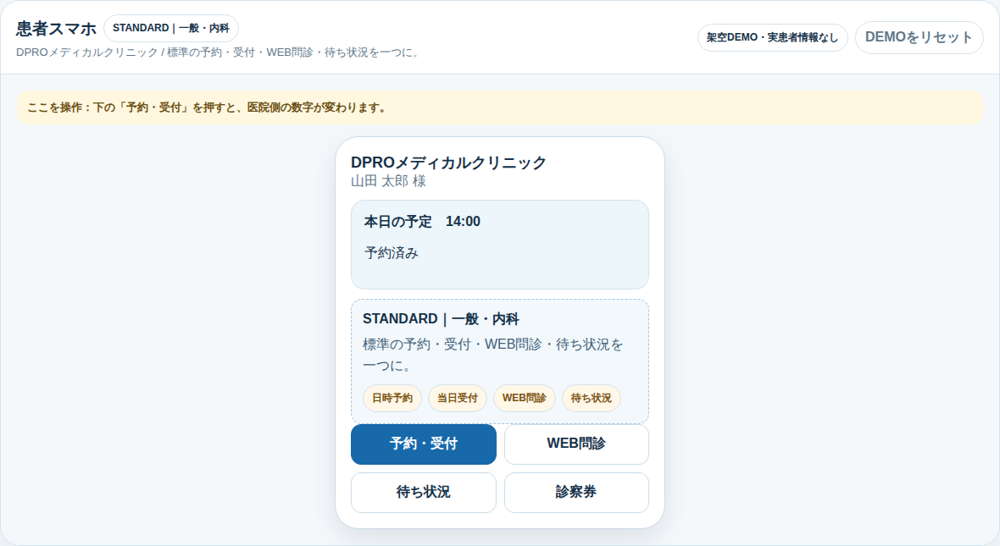
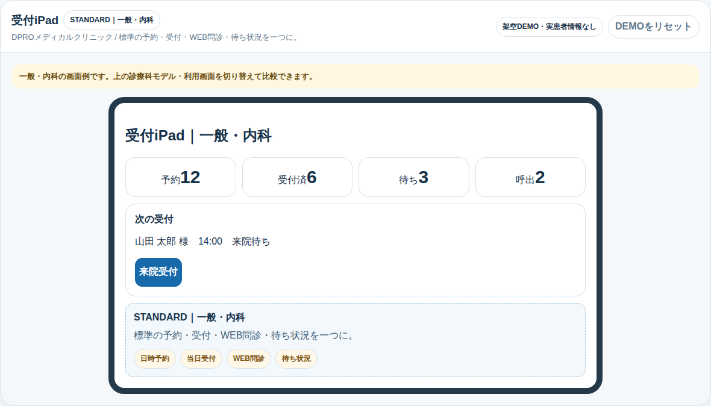
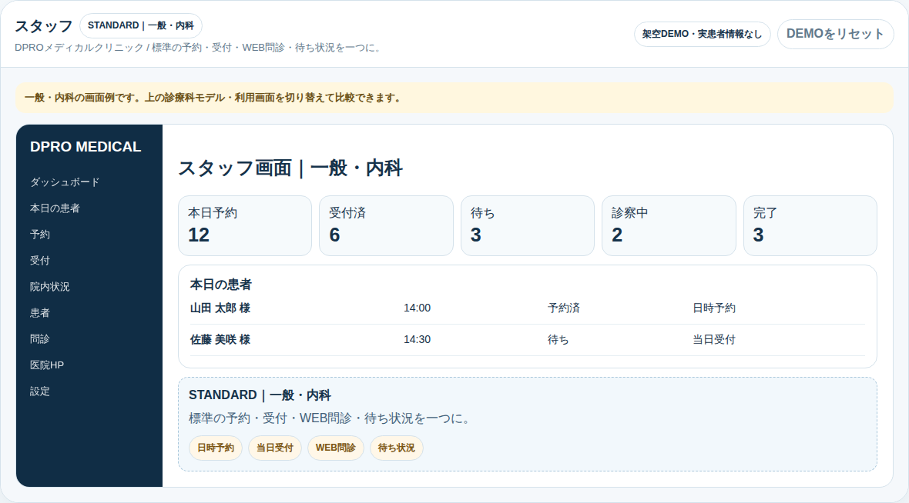
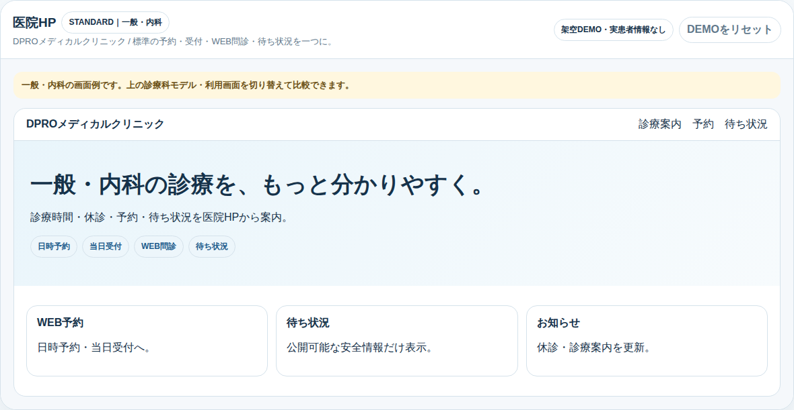

DPRO MEDICAL / DETAILED MANUAL
導入・操作マニュアル（保存版）
契約後も、Owner / 受付 / Staffが自分で確認できる操作ガイドです。まずGuide Center → First10の順で確認してください。

Guide Center
https://dpromstk2000-lab.github.io/dpro-medical-standard/guide-center.html
基本原則
- First10はexactly 10
- Start / Resume / Replayで何度でも確認
- Tutorialは業務操作を自動実行しない
- 公開DEMOでは実患者データを使用しない

DPRO MEDICAL / DETAILED MANUAL
1. 患者スマホ
日常の使い方
- 患者メニューを開く
- 予約または予約確認を選ぶ
- 必要に応じてWEB問診を入力
- 来院時に当日受付を行う
- 待ち状況で現在状態を確認
注意
患者アカウントが必要な本番画面では、契約後に発行された正式アカウントを使用します。公開DEMOの架空データを本番へ流用しません。

DPRO MEDICAL / DETAILED MANUAL
2. 医院管理PC - 毎日の流れ
営業前
- 医院管理PCへログイン
- 当日の予約・受付予定を確認
- System Checkで異常がないことを確認
診療中
- 受付済・待ち・診察中の状態を確認
- 必要な役割へ情報を引き継ぐ
- 患者へ公開してよい情報だけを患者側へ表示
終了時
未処理・次回フォロー対象を確認します。

DPRO MEDICAL / DETAILED MANUAL
3. 受付iPad
受付担当の操作
- 受付iPadを開く
- 来院患者を確認
- 受付に必要な操作だけを実施
- 院内進行は医院管理PC / Staffと整合を確認
誤操作防止
Owner専用設定や不要な管理操作は受付iPadで行わず、権限を分離します。

DPRO MEDICAL / DETAILED MANUAL
4. スタッフ画面
スタッフの見方
- 担当業務と院内進行を確認
- 自分の権限内で必要な更新を行う
- 患者公開情報と院内情報を混同しない
判断が必要な変更はOwner / 医院責任者へ確認してから実施します。

DPRO MEDICAL / DETAILED MANUAL
5. 医院HP / 公開境界
公開してよいもの
予約導線・診療時間・休診・お知らせ・公開可能な待ち状況など、医院が公開を承認した情報。
公開しないもの
患者個人情報、内部メモ、認証情報、秘密鍵、内部運用情報。
確認手順
- 医院HP表示を確認
- 院内画面と比較
- 公開不要な情報が出ていないことを確認

DPRO MEDICAL / DETAILED MANUAL
6. 6診療パターン
STANDARD一般・内科EYE眼科PEDIATRIC小児科ORTHO整形外科BEAUTY美容医療WOMEN婦人科・女性医療
共通基盤は維持し、診療科ごとの必要機能だけを切り替えます。隣接PRESETの機能を推測で有効化しません。
切替後に確認すること
DPRO MEDICAL / DETAILED MANUAL
7. System Check / トラブル復旧
基本順序
- ブラウザを再読み込み
- Guide Centerで該当操作を再確認
- System Checkを開く
- FAILがある場合は本番操作を進めず確認

System Check
https://dpromstk2000-lab.github.io/dpro-medical-standard/system-check.html
よくある確認
- ログイン役割が正しいか
- 通信が切れていないか
- 公開DEMOと本番画面を混同していないか
- 設定変更後に再読込したか
DPRO MEDICAL / DETAILED MANUAL
8. 安全・プライバシー
必ず守る境界
- 患者個人情報を公開DEMOへ入れない
- 認証情報・秘密鍵を画面やPDFへ載せない
- 診療判断をシステム任せにしない
- Tutorialから送信・承認・削除・決済を自動実行しない
- 本番データ削除は権限・確認手順に従う
アクセシビリティ
キーボード、タッチ、マウスで操作できることを前提にしています。フォーカス表示を確認し、操作カードが邪魔な場合は移動・閉じるを使用します。
DPRO MEDICAL / DETAILED MANUAL
9. 契約後の切替 / 保存版チェック
契約後に行うもの
- 正式tenant / clinicの紐付け
- Owner / Staff / 患者認証の本番設定
- 医院情報・診療時間・休診・各種設定
- LINE / HP等の正式導線確認
- System Check全PASS
これらは製品BUILD段階では作成しません。契約後のCustomer Provisioning工程で実施します。

導入相談
https://lin.ee/YxJGXV6D
最終チェック
□ Guide Center確認 □ First10完了 □ 各役割確認 □ System Check PASS □ 公開境界確認